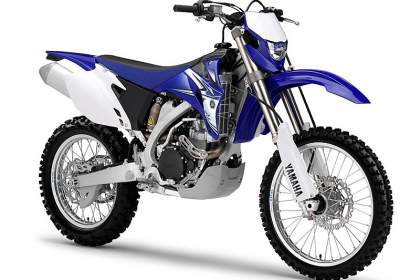

Hyperblog
Tu blog de confianza
Es el título atractivo e interesante del post
Y este es el párrafo de inicio donde vamos a explicar las cosas increíbles que se pueden hacer con ramas

Los blogs son la mejor forma de compartir información y tus ideas. Mucho mas que ir a conferencias o salir en Youtube. Excepto si eres un rockstar, pero estadísticamente no lo eres... por ahora.
Suscribete y dale like